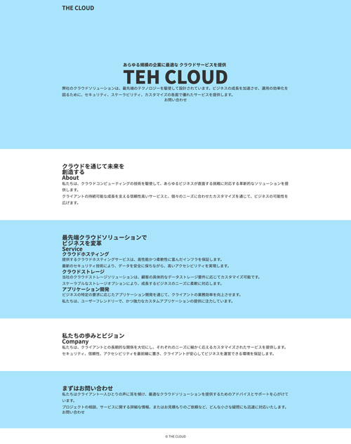

色彩計画とレイアウト
- カスタムプロパティを使った効率的なレイアウト

カスタムプロパティで色彩計画
- 「ベースカラー」「アクセントカラー」「アソートカラー」を設計しておきます
:root { --bgc_blue: #a9e5fc; --bgc_darkblue: #146abf; --title_color: #408edd; }
交互に背景色を変更
- 奇数番の「section」の背景色を「カスタムプロパティ」で指定する
section:nth-of-type(odd) { background-color: var(--bgc_blue); }
記述例
index.html
<!DOCTYPE html> <html lang="ja"> <head> <meta charset="UTF-8"> <meta name="viewport" content="width=device-width, initial-scale=1.0"> <title>THE CLOUD</title> <link rel="stylesheet" href="css/style.css"> </head> <body> <!-- header --> <header class="header"> <div class="container"> <h1>THE CLOUD</h1> </div><!-- /.container --> </header> <!-- /header --> <!-- main --> <main class="main"> <!-- section.hero --> <section class="hero"> <div class="container"> </div><!-- /container --> </section> <!-- section.about --> <section class="about"> <div class="container"> </div><!-- /container --> </section> <!-- section.service --> <section class="service"> <div class="container"> </div><!-- /container --> </section> <!-- section.company --> <section class="company"> <div class="container"> </div><!-- /container --> </section> <!-- section.contact --> <section class="contact"> <div class="container"> </div><!-- /container --> </section> </main> <!-- /main --> <!-- footer --> <footer class="footer"> <p><small>© THE CLOUD</small></p> </footer> <!-- /footer --> </body> </html>
style.css
@charset "UTF-8"; :root { --bgc_blue: #a9e5fc; } /* ---------------------------------------- layout ---------------------------------------- */ .container { width: min(90%, 960px); margin: 0 auto; padding: 60px 0; } section:nth-of-type(odd) { background-color: var(--bgc_blue); }